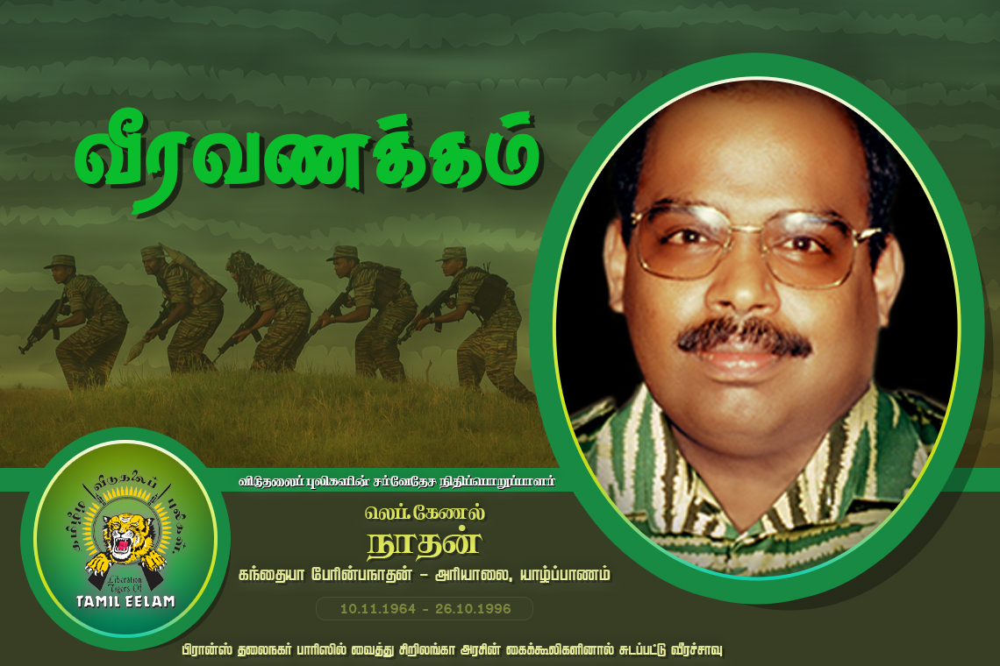

லெப். கேணல் நாதன் வீர வரலாறு

உண்மைப் பெயர்: கஜேந்திரன்
இயக்கப் பெயர்: லெப். கேணல் நாதன்
வீரச்சாவு தேதி: 26.10.1996
வீரச்சாவடைந்த இடம்: பாரிஸ், பிரான்ஸ்
வரலாற்றுக்குறிப்பு
சர்வதேசப் பரப்பில், குறிப்பாக ஐரோப்பிய மண்ணில் தமிழீழ விடுதலைப் போராட்டத்திற்கான உத்தியோகபூர்வக் கட்டமைப்புகளை நிறுவி, பாரிஸ் நகரில் பொறுப்பாளராகச் செயலாற்றிய மிக முக்கிய மூத்த தளபதி லெப். கேணல் நாதன் ஆவார் [1]. இவர் பிரான்ஸ் தலைநகர் பாரிசில் வைத்து துரோகிகளால் சுட்டுக்கொல்லப்பட்டு வீரச்சாவடைந்தார்.